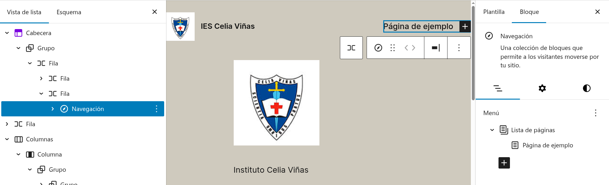
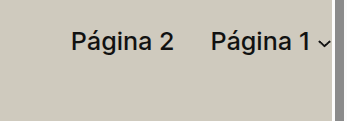
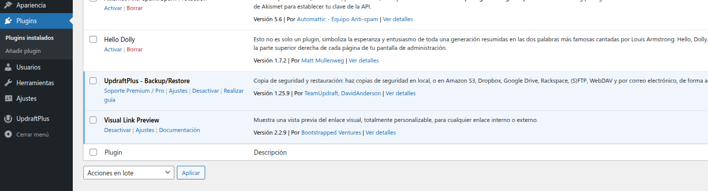
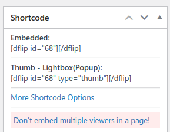
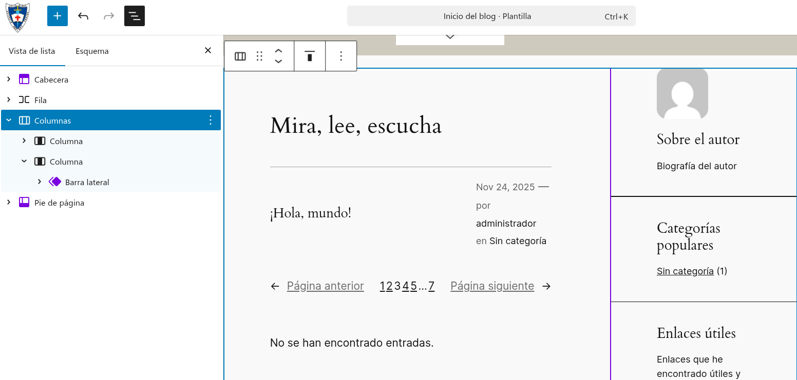
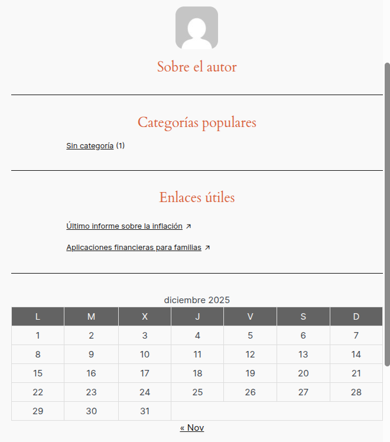
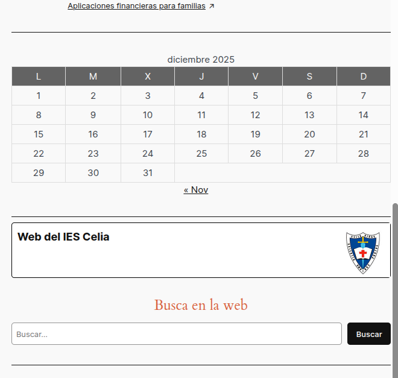

UT2. TAREA 4: RESTO DE CONFIGURACIÓN EN WORDPRESS
FICHA TÉCNICA DE LA ACTIVIDAD ¶
| Unidad Didáctica | Unidad 2: Instalación, configuración y utilización de Gestores de Contenido (CMS) |
| Nombre de la Tarea | UT2. Tarea 4: Resto de configuración en WordPress |
| Resultado de Aprendizaje (RA) | RA1: Instala gestores de contenidos, identificando sus aplicaciones y configurándolos según requerimientos. |
| Criterios de Evaluación (CE) |
CE c) Se han gestionado usuarios con roles diferentes. CE d) Se ha personalizado la interfaz del gestor de contenidos. CE g) Se han instalado y configurado los módulos y menús necesarios. CE j) Se han realizado copias de seguridad de los contenidos del gestor. |
| Tiempo Estimado | 4 horas (Equivalente a 1 sesión semanal completa de taller) |
MÉTODO DE ENTREGA Y FORMATO ¶
-
[X] Documento: Documento final en formato [PDF] (UT2_Tarea4_NombreAlumno.pdf) que detalle todo el proceso a través de explicaciones de los pasos realizados y las capturas de pantalla solicitadas. El formato debe ser limpio y profesional, con texto justificado, enunciados destacados en negrita y comentarios obligatorios justo debajo de cada captura. Es obligatorio incluir al final los enlaces de la documentación oficial utilizados.
-
[ ] Archivos de Código: No se requiere la entrega de archivos fuente para esta tarea.
-
[X] Enlace/Texto: El portal debe permanecer operativo y accesible públicamente a través de la red del centro para su auditoría directa por parte del profesor en la URL:
http://<TU_IP_FLOTANTE>/iescelia.
1. DESCRIPCIÓN GENERAL. OBJETIVOS ¶
2. CONSIDERACIONES PREVIAS ¶
3. ACTIVIDADES A REALIZAR ¶
Paso1 .Menús
Vamos a personalizar el menú que tenemos en el encabezado. Los menús se pueden poner en cualquier sitio como cualquier bloque.

En el panel de la derecha vemos que solo tenemos una opción. Vamos a añadir un enlace por cada una de las páginas que tenemos y eliminar esa página de ejemplo. Vamos a meter un enlace dentro de otro a modo de submenú. Hacer una captura donde se aprecie vuestro menú (una imagen como la anterior)

Paso 2. Usuarios ¶
En esta parte crearemos un usuario de cada tipo (excepto Administrador)
Realizaremos capturas de pantalla de la creación de un usuario, la lista de usuario y del entorno de cada uno de ellos una vez entramos
El resultado final será un documento PDF, con el formato requerido para este curso, que detalle todo el proceso a través de explicaciones de los pasos realizados, capturas de pantalla de los mismos y cuestiones más relevantes de todo el proceso (problemas encontrados, pasos en la configuración...)
Se creará un usuario llamado profesor, con permisos de administrador. La contraseña se facilitará en la documentación, para verificar su realización.
Paso 3. Instalación de plugin ¶
-
Instalar los siguientes plugin en WordPress

Hacer una captura como la anterior explicando el proceso para insertarlos
-
Añadiremos un plugin para visualizar PDFs en los posts. Para ello:
-
Buscaremos en los plugins 'Dear Flipbook – PDF'.
-
Lo instalamos y activamos
-
Para usarlo, tenemos una nueva opción en el menú del administrador que nos permite crear un nuevo FlipBooK. Seleccionaremos el PDF y copiaremos el código que aparece arriba a la derecha
-

-
Para que aparezca en una entrada o página insertaremos un Shortcode y pegaremos el código anterior. Incluirlo en una entrada o página y hacer una captura
4. Barra lateral e inserción de elementos ¶
Realizar capturas de pantalla más importantes de todo el proceso que vas a seguir. Incluir explicaciones de lo que se va haciendo y como.
-
Incluir una barra lateral en el bloque de la derecha de nuestro sitio. Hacer una captura de como se ve la barra en el sitio (No en el editor)

-
Modificar lo necesario para que el resultado sea el siguiente. Tenemos que editar distintos elementos. Añadir un calendario. Hacer una captura

-
Debajo del calendario vamos a añadir un tipo de enlaces con el plugin instalado en el apartado anterior, llamado 'Visual Link Preview'. Ahora tendremos la opción Visual Link Preview en el insertador de bloques. Añadir un enlace como el siguiente:
Paso 5. Incrustar contenido: ¶
En esta parte vamos a incrustar un mapa con una localización de Google Maps, y el tiempo en nuestra localidad (por ejemplo con www.eltiempo.es). En una de las páginas o entradas seguir estos pasos:
-
En Google Maps buscaremos una localización.
-
Pulsaremos sobre compartir, y elegiremos la opción de incrustar.
-
Seleccionamos el código.
-
En los Widgets de nuestra web, añadimos uno de tipo 'HTML Personalizado'.
-
Pegamos el código en el widget.
-
-
Desde www.eltiempo.es (https://www.eltiempo.es/widget)
-
Añadimos otro widget de tipo 'Texto' pero el código lo pegamos en la pestaña 'HTML',
-
NOTA: Si utilizamos el widget de tipo 'HTML Personalizado', sólo podemos usar código con etiquetas 'iframe', ya que los que llevan la etiqueta 'script', los filtra por seguridad.
Realizar capturas de pantalla donde se visualicen los pasos más importantes y el resultado (que se vea vuestra ip-publica)
Paso 6. Copia de seguridad ¶
Con el otro de los plugin instalados, vamos a hacer una copia de seguridad de nuestro sitio. Hacer una captura donde se visualice que se ha realizado
El resultado final será un documento PDF, con el formato requerido para este curso, que detalle todo el proceso a través de explicaciones de los pasos realizados, capturas de pantalla de los mismos y cuestiones más relevantes de todo el proceso (problemas encontrados, pasos en la configuración...)
 |
4. CALIFICACIÓN ¶
IMPORTANTE: El retraso en el plazo de entrega a través de la plataforma, la entrega del documento en formatos editables no permitidos (como .docx) o la omisión de los enlaces de las fuentes documentales utilizadas penalizará gravemente la nota o invalidará la práctica.
La actividad se evaluará ponderando las competencias técnicas alcanzadas, la administración avanzada de componentes y roles, y la calidad documental de la entrega.
CRITERIOS DE CALIFICACIÓN ¶
| Indicador / Criterio | Nivel Excelente (100% - 90%) | Nivel Adecuado (89% - 50%) | Nivel Insuficiente (49% - 0%) |
|---|---|---|---|
| Personalización de Menús y Barra Lateral (2.5 Puntos) | Configura de manera óptima los menús de navegación con estructura jerárquica (submenús) y personaliza los widgets en la barra lateral o pie de página (calendario, enlaces), garantizando una navegación fluida e intuitiva. | Configura los menús y widgets pero carece de niveles jerárquicos en el menú o la disposición de los widgets en las barras laterales es incompleta. | No personaliza los menús ni los widgets, manteniendo la disposición por defecto o con enlaces rotos. |
| Gestión de Usuarios y Roles (2.5 Puntos) | Instala y utiliza correctamente la herramienta de gestión de roles (User Role Editor) para crear el rol personalizado "Profesor" con los permisos requeridos. Da de alta al nuevo usuario asignándole dicho rol y comprueba su acceso. | Crea el nuevo usuario y rol, pero los permisos asignados no se corresponden exactamente con lo solicitado o se omiten comprobaciones de acceso. | No crea el rol personalizado ni el usuario solicitado, o comete errores graves de permisos en el gestor. |
| Instalación de Plugins y Contenido Incrustado (3.0 Puntos) | Instala, activa y configura correctamente los plugins requeridos (Dear Flipbook, Visual Link Preview), integrando shortcodes funcionales y contenido externo incrustado (Google Maps y widget del tiempo) sin errores de carga. | Instala los plugins pero no integra correctamente los shortcodes en las páginas/entradas, o alguno de los elementos externos incrustados no se visualiza adecuadamente. | No instala los plugins requeridos o se producen fallos críticos en la integración del contenido incrustado. |
| Copia de Seguridad y Calidad Documental (2.0 Puntos) | Realiza y documenta la copia de seguridad completa del sitio. Entrega el documento PDF con formato profesional, texto justificado, capturas comentadas y el sitio permanece accesible en la IP correspondiente. | Realiza la copia de seguridad pero la documentación presenta descuidos de formato, falta justificación o las explicaciones son escasas. | No realiza la copia de seguridad, no entrega el documento en formato PDF o el sitio no se encuentra accesible para su evaluación. |